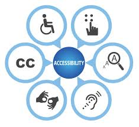

Sobre acessibilidade
O que é Acessibilidade?
Acessibilidade pode ser definida como a possibilidade e condição de alcance, percepção e entendimento para a utilização, em igualdade de oportunidades, com segurança e autonomia, do meio físico, do transporte, da informação e da comunicação, inclusive dos sistemas e tecnologias de informação e comunicação, bem como de outros serviços e instalações. Para as pessoas com deficiência e mobilidade reduzida, a acessibilidade possibilita uma vida independente e com participação plena em todos os seus aspectos; e para todas as pessoas, em diferentes contextos, pode proporcionar maior conforto, facilidade de uso, rapidez, satisfação, segurança e eficiência.
Importância da Acessibilidade
A acessibilidade tem como principal objetivo garantir que as pessoas com deficiência possam viver de maneira independente e participar ativamente da sociedade. Promover a acessibilidade significa assegurar que essas pessoas tenham acesso igualitário ao ambiente físico, ao transporte, à informação e à comunicação, incluindo os sistemas e tecnologias de informação, além de outros serviços e instalações de uso público.
História da Acessibilidade
A acessibilidade começou na Grécia Antiga, com leis que facilitavam o acesso a pessoas com deficiência. No século XX, movimentos sociais, como o Disability Rights Movement, promoveram a inclusão, levando à criação de leis como a Americans with Disabilities Act (ADA) e a Lei Brasileira de Inclusão (LBI).
Nos anos 2000, a acessibilidade digital ganhou destaque com as WCAG, visando tornar a internet acessível para todos. Apesar dos avanços, ainda existem desafios como barreiras arquitetônicas e dificuldades de integração entre tecnologias assistivas e websites.
A acessibilidade é uma questão global, com iniciativas como o Dia Internacional da Pessoa com Deficiência, e deve ser reconhecida como um direito humano fundamental, garantindo igualdade e inclusão.
Dificuldades da Acessibilidade
Embora avanços tenham sido feitos, ainda existem muitos desafios para garantir a plena acessibilidade. Muitos ambientes públicos não possuem adaptações necessárias, como rampas de acesso, sinalização em braille ou banheiros adaptados. Além disso, a acessibilidade digital ainda é um campo em que muitos sites, aplicativos e plataformas não atendem às necessidades de pessoas com deficiência, como os deficientes visuais, auditivos e motoras.
Avanços na Acessibilidade
Acessibilidade tem evoluído significativamente ao longo das últimas décadas, com progressos em áreas como legislação, infraestrutura, e tecnologias assistivas. Leis como a Americans with Disabilities Act (ADA) e a Lei Brasileira de Inclusão (LBI) estabeleceram direitos e garantiram acessibilidade em espaços públicos e privados. No campo digital, surgiram as Diretrizes de Acessibilidade para Conteúdo Web (WCAG), impulsionando a inclusão online. Além disso, as inovações tecnológicas, como softwares de leitura de tela e dispositivos de mobilidade assistiva, têm ampliado as possibilidades para a participação plena das pessoas com deficiência na sociedade.